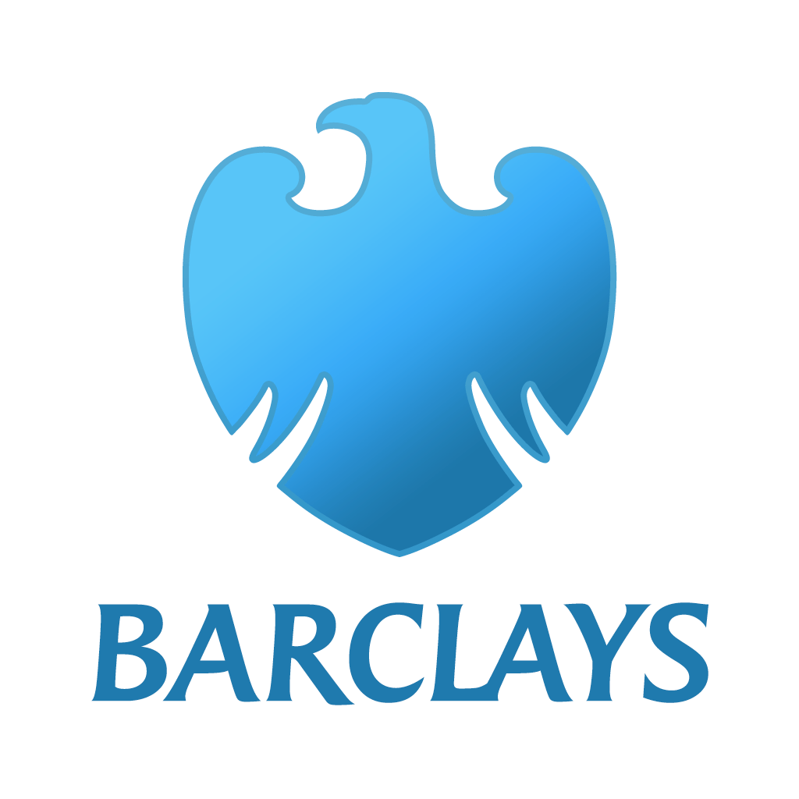

I studied at The Machester Metropolitan University, graduating with a 2.1 BA Hons Business & Legal Studies
2011-2014
I have a BTEC National Diploma in Media Studies
I have worked at Barclays since 2015
My journey started in the branch as a cashier then leading to a Personal Banker role. I left the branch network in 2022 and transitioned into world of Corporate Client Service. I outgrew this role fairly quickly and was looking for my next challange. I needed more from my job, I wanted a career! Which led me to where I am today as a Software Engineer.